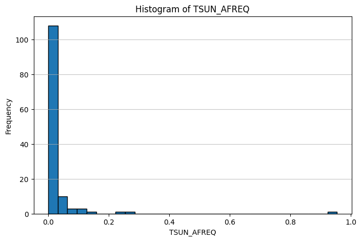
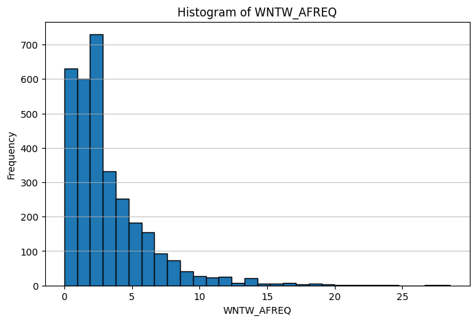

# Import Packages Test:
import pandas as pd
import numpy as np
import matplotlib.pyplot as plt
#Current WD:
import os
cwd = os.getcwd()
print(cwd)
c:\Users\nyager\Desktop\YagerMLCode\MachineLearning_Fall24\homeworkDue: 2022-10-16 at 8:30 AM PT
For this assignment, you will practice downloadings, cleaning, and analyzing data from the National Risk Index (NRI) and the CDC Social Vulnerability Index (SVI).
Pre-work: loading packages and checking working directory
# Import Packages Test:
import pandas as pd
import numpy as np
import matplotlib.pyplot as plt
#Current WD:
import os
cwd = os.getcwd()
print(cwd)
c:\Users\nyager\Desktop\YagerMLCode\MachineLearning_Fall24\homeworkTask 1 - NRI Data Cleaning
# Loading NRI data and specifying STCOFIPS as a string column
nri_data = pd.read_csv("data/raw/NRI_Data_By_County.csv", dtype={'STCOFIPS': str})
# Here, we check if the State-County FIPS code (STCOFIPS) was loaded correctly
print(nri_data.dtypes) # Verify if 'STCOFIPS' is treated as an object (string)
second_value = nri_data['STCOFIPS'].iloc[1]
if isinstance(second_value, str):
print("yes Nolan, it's a string")
else:
print("no Nolan, it isn't a string")
OID_ int64
NRI_ID object
STATE object
STATEABBRV object
STATEFIPS int64
...
WNTW_ALR_NPCTL float64
WNTW_RISKV float64
WNTW_RISKS float64
WNTW_RISKR object
NRI_VER object
Length: 465, dtype: object
yes Nolan, it's a string# Subsetting:
columns_to_keep = ['STCOFIPS'] + [col for col in nri_data.columns if col.endswith('_AFREQ') or col.endswith('_RISKR')]
nri_subset = nri_data[columns_to_keep]
# Looking at first 5 rows to check:
print(nri_subset.head(5)) STCOFIPS AVLN_AFREQ AVLN_RISKR CFLD_AFREQ CFLD_RISKR \
0 01001 NaN Not Applicable NaN Not Applicable
1 01003 NaN Not Applicable 3.684142 Relatively Low
2 01005 NaN Not Applicable NaN Not Applicable
3 01007 NaN Not Applicable NaN Not Applicable
4 01009 NaN Not Applicable NaN Not Applicable
CWAV_AFREQ CWAV_RISKR DRGT_AFREQ DRGT_RISKR ERQK_AFREQ ... \
0 0.0 No Rating 25.969774 Relatively Low 0.000431 ...
1 0.0 No Rating 12.353442 Relatively Moderate 0.000338 ...
2 0.0 No Rating 43.956953 Relatively Low 0.000227 ...
3 0.0 No Rating 28.894501 Very Low 0.000790 ...
4 0.0 No Rating 28.152598 Relatively Low 0.000817 ...
TRND_AFREQ TRND_RISKR TSUN_AFREQ TSUN_RISKR VLCN_AFREQ \
0 0.480184 Relatively Moderate NaN Not Applicable NaN
1 0.953140 Relatively Moderate NaN Insufficient Data NaN
2 0.739018 Relatively Moderate NaN Not Applicable NaN
3 0.586160 Relatively Moderate NaN Not Applicable NaN
4 0.710332 Relatively Moderate NaN Not Applicable NaN
VLCN_RISKR WFIR_AFREQ WFIR_RISKR WNTW_AFREQ WNTW_RISKR
0 Not Applicable 0.000035 Very Low 0.433437 Very Low
1 Not Applicable 0.002229 Relatively Moderate 0.182759 Relatively Low
2 Not Applicable 0.000038 Very Low 0.185759 Very Low
3 Not Applicable 0.000040 Very Low 0.743034 Very Low
4 Not Applicable 0.000035 Very Low 0.866873 Very Low
[5 rows x 37 columns]# Creating a dataframe:
afreq_riskr_columns = [col for col in nri_subset.columns if col.endswith('_AFREQ') or col.endswith('_RISKR')]
missing_values_nri = nri_subset[afreq_riskr_columns].isna().sum()
# Table:
summary_table_missing = pd.DataFrame({
'Hazard_Type': missing_values_nri.index,
'Missing_Values': missing_values_nri.values
})
# Print Table:
print(summary_table_missing) Hazard_Type Missing_Values
0 AVLN_AFREQ 3023
1 AVLN_RISKR 0
2 CFLD_AFREQ 2646
3 CFLD_RISKR 0
4 CWAV_AFREQ 0
5 CWAV_RISKR 0
6 DRGT_AFREQ 7
7 DRGT_RISKR 0
8 ERQK_AFREQ 0
9 ERQK_RISKR 0
10 HAIL_AFREQ 7
11 HAIL_RISKR 0
12 HWAV_AFREQ 0
13 HWAV_RISKR 0
14 HRCN_AFREQ 918
15 HRCN_RISKR 0
16 ISTM_AFREQ 229
17 ISTM_RISKR 0
18 LNDS_AFREQ 40
19 LNDS_RISKR 0
20 LTNG_AFREQ 123
21 LTNG_RISKR 0
22 RFLD_AFREQ 0
23 RFLD_RISKR 0
24 SWND_AFREQ 7
25 SWND_RISKR 0
26 TRND_AFREQ 7
27 TRND_RISKR 0
28 TSUN_AFREQ 3103
29 TSUN_RISKR 0
30 VLCN_AFREQ 3125
31 VLCN_RISKR 0
32 WFIR_AFREQ 88
33 WFIR_RISKR 0
34 WNTW_AFREQ 0
35 WNTW_RISKR 0# Create a new column
nri_data['AVLN_AFREQ_Missing'] = nri_data['AVLN_AFREQ'].isna()
# Cross-tab set up
cross_tab = pd.crosstab(nri_data['AVLN_AFREQ_Missing'], nri_data['AVLN_RISKR'], dropna=False)
# Printing
print(cross_tab)AVLN_RISKR Not Applicable Relatively High Relatively Low \
AVLN_AFREQ_Missing
False 0 15 52
True 3023 0 0
AVLN_RISKR Relatively Moderate Very High Very Low
AVLN_AFREQ_Missing
False 33 9 99
True 0 0 0 # Selecting _AFREQ columns
afreq_columns = [col for col in nri_data.columns if col.endswith('_AFREQ')]
# Filling missing values with 0s
nri_data[afreq_columns] = nri_data[afreq_columns].fillna(0)
# Printing to see if it worked
print(nri_data[afreq_columns].isna().sum())AVLN_AFREQ 0
CFLD_AFREQ 0
CWAV_AFREQ 0
DRGT_AFREQ 0
ERQK_AFREQ 0
HAIL_AFREQ 0
HWAV_AFREQ 0
HRCN_AFREQ 0
ISTM_AFREQ 0
LNDS_AFREQ 0
LTNG_AFREQ 0
RFLD_AFREQ 0
SWND_AFREQ 0
TRND_AFREQ 0
TSUN_AFREQ 0
VLCN_AFREQ 0
WFIR_AFREQ 0
WNTW_AFREQ 0
dtype: int64Task 2 - SVI Data Cleaning
# Loading SVI data and telling python FIPS is a string
svi_data = pd.read_csv("data/raw/SVI_2022_Data_By_County.csv", dtype={'FIPS': str})ST, STATE, ST_ABBR, STCNTY, COUNTY, FIPS, LOCATION, AREA_SQMI, E_TOTPOP, EP_POV150, EP_UNEMP, EP_HBURD, EP_NOHSDP, EP_UNINSUR, EP_AGE65, EP_AGE17, EP_DISABL, EP_SNGPNT, EP_LIMENG, EP_MINRTY, EP_MUNIT, EP_MOBILE, EP_CROWD, EP_NOVEH, EP_GROUPQ, EP_NOINT, EP_AFAM, EP_HISP, EP_ASIAN, EP_AIAN, EP_NHPI, EP_TWOMORE, EP_OTHERRACE# Subsetting SVI data
columns_to_keep = [
'ST', 'STATE', 'ST_ABBR', 'STCNTY', 'COUNTY', 'FIPS', 'LOCATION', 'AREA_SQMI',
'E_TOTPOP', 'EP_POV150', 'EP_UNEMP', 'EP_HBURD', 'EP_NOHSDP', 'EP_UNINSUR',
'EP_AGE65', 'EP_AGE17', 'EP_DISABL', 'EP_SNGPNT', 'EP_LIMENG', 'EP_MINRTY',
'EP_MUNIT', 'EP_MOBILE', 'EP_CROWD', 'EP_NOVEH', 'EP_GROUPQ', 'EP_NOINT',
'EP_AFAM', 'EP_HISP', 'EP_ASIAN', 'EP_AIAN', 'EP_NHPI', 'EP_TWOMORE', 'EP_OTHERRACE'
]
# Creating the subset:
svi_subset = svi_data[columns_to_keep]# Seeing which values are missing by each column in a dataframe:
missing_values_svi = svi_subset.isna().sum().reset_index()
missing_values_svi.columns = ['Columns', 'Missing_Values_SVI']
# Printing
print(missing_values_svi) Columns Missing_Values_SVI
0 ST 0
1 STATE 0
2 ST_ABBR 0
3 STCNTY 0
4 COUNTY 0
5 FIPS 0
6 LOCATION 0
7 AREA_SQMI 0
8 E_TOTPOP 0
9 EP_POV150 0
10 EP_UNEMP 0
11 EP_HBURD 0
12 EP_NOHSDP 0
13 EP_UNINSUR 0
14 EP_AGE65 0
15 EP_AGE17 0
16 EP_DISABL 0
17 EP_SNGPNT 0
18 EP_LIMENG 0
19 EP_MINRTY 0
20 EP_MUNIT 0
21 EP_MOBILE 0
22 EP_CROWD 0
23 EP_NOVEH 0
24 EP_GROUPQ 0
25 EP_NOINT 0
26 EP_AFAM 0
27 EP_HISP 0
28 EP_ASIAN 0
29 EP_AIAN 0
30 EP_NHPI 0
31 EP_TWOMORE 0
32 EP_OTHERRACE 0Task 3 - Data Merging 1a. Identify any FIPS codes that are present in the NRI data but not in the SVI data and vice versa.
# Extracting both FIPS codes as sets:
nri_fips = set(nri_subset['STCOFIPS'])
svi_fips = set(svi_subset['FIPS'])
# FIPS in NRI, but not in SVI data:
fips_in_nri_not_svi = nri_fips - svi_fips
# Vice versa: FIPS in SVI, but not in NRI:
fips_in_svi_not_nri = svi_fips - nri_fips
# Printing both:
print(f"FIPS codes in NRI but not in SVI: {fips_in_nri_not_svi}")
print(f"FIPS codes in SVI but not in NRI: {fips_in_svi_not_nri}")FIPS codes in NRI but not in SVI: {'72039', '72057', '72015', '72111', '72031', '09015', '72025', '72103', '72139', '72079', '69100', '72107', '72054', '72071', '72087', '72059', '72091', '09003', '72061', '72089', '72129', '72035', '72125', '72053', '72121', '72109', '72041', '72063', '66010', '72073', '72007', '78030', '72029', '72049', '72097', '72019', '72101', '78010', '69120', '72119', '72095', '72105', '72047', '09007', '72123', '72021', '72037', '72115', '72023', '09011', '72067', '72085', '72135', '72133', '72017', '72001', '72027', '09013', '72083', '72151', '09001', '72043', '72051', '72131', '72069', '72127', '09009', '72099', '72141', '72033', '72009', '72147', '78020', '72117', '72145', '72137', '72005', '72093', '72045', '72077', '60020', '72075', '72011', '72081', '72003', '69110', '60050', '72065', '72013', '72149', '72143', '60010', '72055', '72113', '09005', '72153'}
FIPS codes in SVI but not in NRI: {'09140', '09120', '09190', '09130', '09150', '09170', '09110', '09180', '09160'}1b. Describe any discrepancies and possible causes? Answer: There are quite a lot more FIPS codes in the NRI that are not in the SVI than FIPS codes that are in the SVI data, but not in the NRI data. I know from studying Congress that congressional boundaries change occasionally, perhaps this also happens with counties. I suppose it’s possible that this data was collected in slightly different years, and in between the collection periods of each some county level boundaries changed. It’s also possible that there is simply missing data due to collection issues, such as if there is no data available. Best case scenario, this was missing at random, worst case scenario, there is a systematic reason as to why it is missing. For instance, perhaps the data is missing in the SVI data specifically for counties that lack proper funding, which may be due to having residents with a lower economic status.
1c. What do these discrepancies if any, mean for interpreting results based on the merged dataset moving forward? Answer: as I mentioned above, if the missing data is missing NOT at random, that is, there is a systematic reason as to why it is missing, this could lead to biases in our future analyses. For example, above I noted that it’s possible SVI data are missing for counties with lower socioeconomic status, which would lead to us having fewer counties with these characteristics. These types of counties would then be less represented in our analyses.
# Renaming STCOFIPS in NRI to FIPS (simpler, aligned with SVI data)
nri_subset = nri_subset.rename(columns={'STCOFIPS': 'FIPS'})
# Perform outer join on the FIPS code
nri_svi_merged = pd.merge(nri_subset, svi_subset, on='FIPS', how='outer')
# Printing it to check:
print(nri_svi_merged.head()) FIPS AVLN_AFREQ AVLN_RISKR CFLD_AFREQ CFLD_RISKR CWAV_AFREQ \
0 01001 NaN Not Applicable NaN Not Applicable 0.0
1 01003 NaN Not Applicable 3.684142 Relatively Low 0.0
2 01005 NaN Not Applicable NaN Not Applicable 0.0
3 01007 NaN Not Applicable NaN Not Applicable 0.0
4 01009 NaN Not Applicable NaN Not Applicable 0.0
CWAV_RISKR DRGT_AFREQ DRGT_RISKR ERQK_AFREQ ... EP_NOVEH \
0 No Rating 25.969774 Relatively Low 0.000431 ... 4.0
1 No Rating 12.353442 Relatively Moderate 0.000338 ... 2.3
2 No Rating 43.956953 Relatively Low 0.000227 ... 11.7
3 No Rating 28.894501 Very Low 0.000790 ... 7.5
4 No Rating 28.152598 Relatively Low 0.000817 ... 4.8
EP_GROUPQ EP_NOINT EP_AFAM EP_HISP EP_ASIAN EP_AIAN EP_NHPI EP_TWOMORE \
0 0.9 10.9 19.6 3.2 1.1 0.1 0.0 3.3
1 1.5 10.9 8.3 4.8 0.9 0.2 0.0 3.1
2 12.0 31.8 46.9 4.8 0.5 0.3 0.0 1.8
3 6.4 20.2 20.7 2.9 0.3 0.1 0.0 1.7
4 1.0 16.9 1.2 9.7 0.2 0.1 0.2 2.8
EP_OTHERRACE
0 0.2
1 0.4
2 1.2
3 0.1
4 0.1
[5 rows x 69 columns]# Creating a dataframe showing the number of missing values
missing_values_merged = nri_svi_merged.isna().sum().reset_index()
missing_values_merged.columns = ['Column', 'Missing_Values_Merged']
# Previewing it:
print(missing_values_merged) Column Missing_Values_Merged
0 FIPS 0
1 AVLN_AFREQ 3032
2 AVLN_RISKR 9
3 CFLD_AFREQ 2655
4 CFLD_RISKR 9
.. ... ...
64 EP_ASIAN 96
65 EP_AIAN 96
66 EP_NHPI 96
67 EP_TWOMORE 96
68 EP_OTHERRACE 96
[69 rows x 2 columns]Task 4 - Data Analysis
# Identify all numerical variables
numerical_columns = nri_svi_merged.select_dtypes(include=['float64', 'int64']).columns
# Creating histogram for one variable
def plot_histogram(data, column_name, bins=30):
plt.figure(figsize=(8, 5))
plt.hist(data[column_name].dropna(), bins=bins, edgecolor='black')
plt.title(f'Histogram of {column_name}')
plt.xlabel(column_name)
plt.ylabel('Frequency')
plt.grid(axis='y', alpha=0.75)
plt.show()
# Looping through all numerical variables, creating histograms:
for col in numerical_columns:
plot_histogram(nri_svi_merged, col)


END OF HOMEWORK 2.